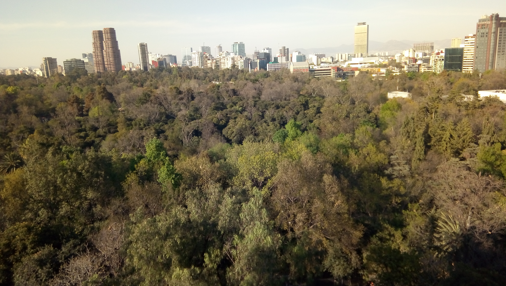
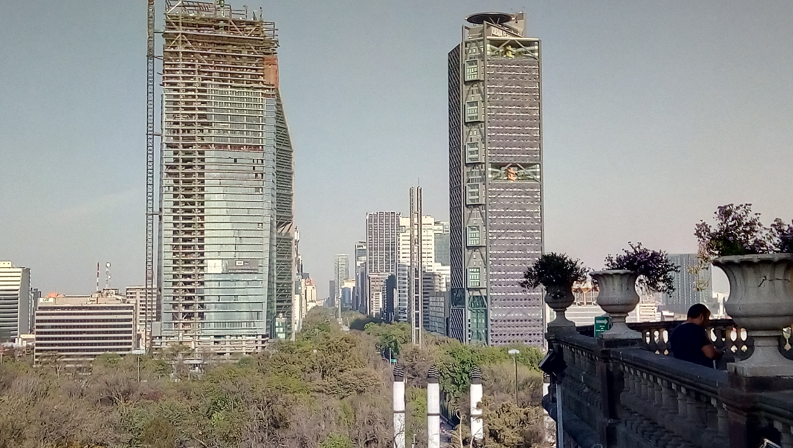
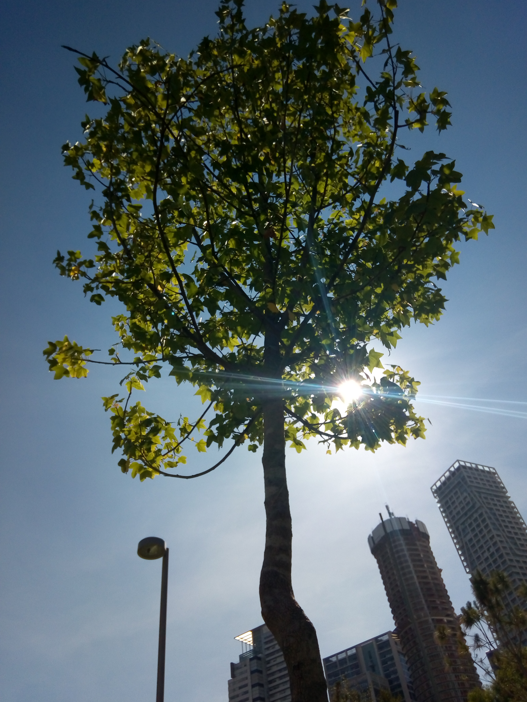
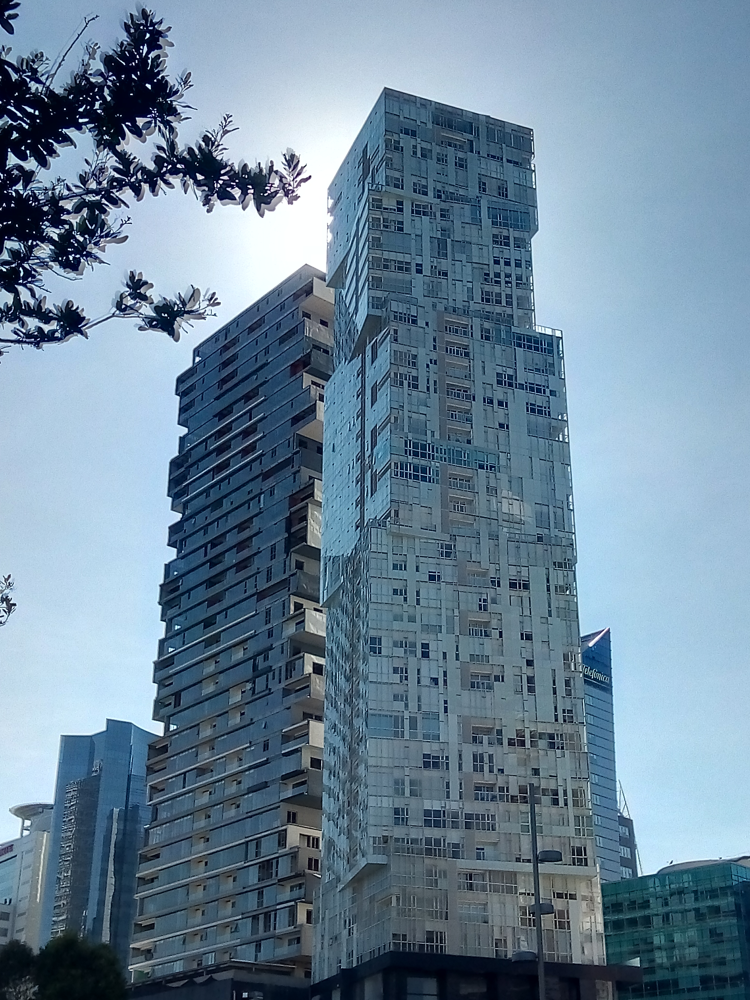
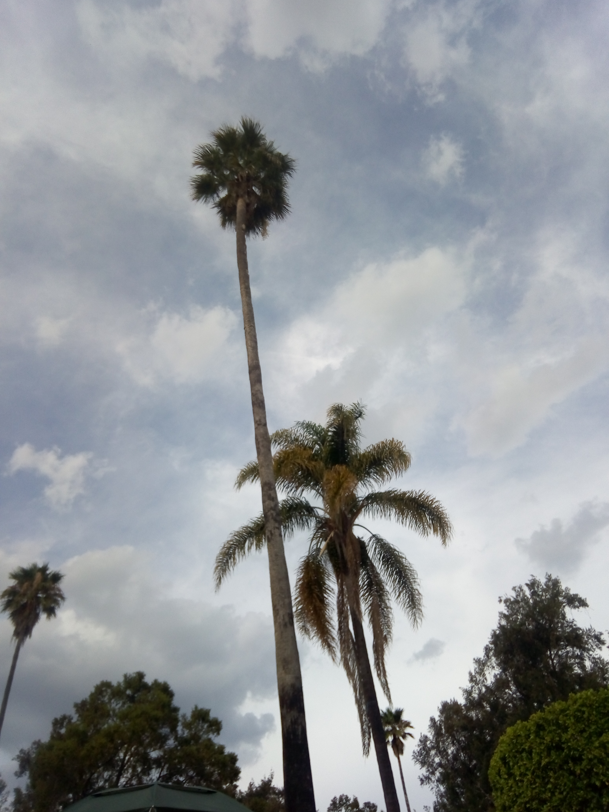

Y Tú! Que opinas? cabe recalcar que todas estas fotrografías las tomé con mi celular de 16 MPX no es la misma calidad que una cámara como fuji, canon o nikon pero los detalles, las profundidades se sienten similares.
Espero te haya gustado esta pequeña galería de mi experiencia.